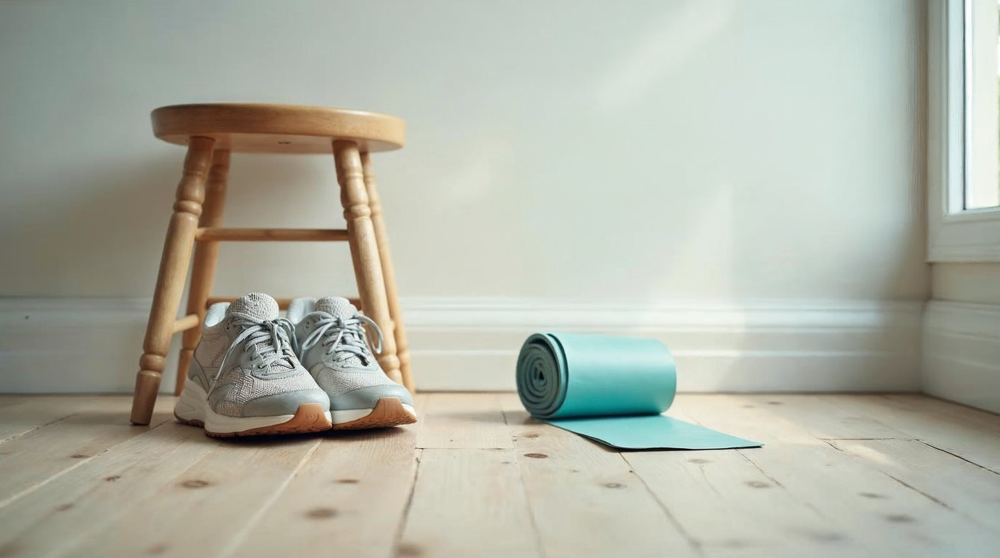
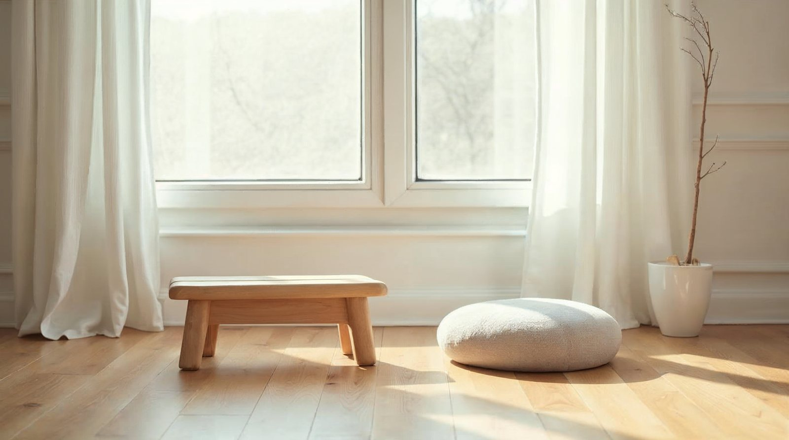

이종호 한의사 감수좋은꿈참사랑한의원 대표원장 (한의사 면허번호 19769)발행 2026-11-23 · 수정 2026-11-26
이 글의 차례
- 왜 이런 불편이 생길 수 있나요
- 무릎과 허리 불편이 발목과 이어져 있는지 어떻게 가늠하나요?
- 먼저 이렇게 여쭙니다
- 신발 바닥 닳은 모양으로 무엇을 알 수 있나요?
- 일상에서 먼저 해 볼 수 있는 것
- 균형 연습은 어떻게 단계를 올려 가면 좋을까요?
- 상황별 예시
- 스스로 점검해 보세요
- 왜 오래전 부상인데 지금 불편해질까요?
- 한의원에서 함께 살필 수 있는 경우
- 여행이나 오래 걷는 날에는 어떻게 대비하면 좋을까요?
- 운동을 다시 시작할 때는 무엇을 조심하면 좋을까요?
- 첫 방문은 이렇게 진행됩니다
- 얼마나 지켜보고 언제 상담할까요
- 이렇게 기록해 오시면 상담이 쉬워집니다
- 이런 증상은 먼저 확인이 필요합니다
- 관련 글
예전에 발목을 자주 삐었다면 지금의 무릎과 허리 불편과 연관이 있을 수 있어, 예전 부상 이야기와 지금 걷는 모습, 신발 닳는 모양을 함께 살핍니다. 발목은 몸을 받치는 첫 관절이라 오래된 습관이 무릎과 골반, 허리까지 이어질 수 있기 때문입니다. '발목은 원래 잘 삐어요'라고 지나가듯 말씀하시는 분들이 많은데, 이런 이야기가 중요한 단서가 됩니다.
물론 무릎과 허리 불편이 모두 발목에서 시작되는 것은 아닙니다. 오래 앉는 일, 체중 변화, 무릎과 허리 자체의 문제도 함께 따져 보아야 해서 발목 이야기는 여러 단서 가운데 하나로 놓고 봅니다.
방금 발목을 삔 경우라면 이 글의 생활 조정보다 글 아래 '먼저 확인' 항목부터 살펴봐 주세요. 이 글은 삔 지 시간이 지난 발목과 지금의 무릎·허리 불편을 함께 보는 이야기입니다.
왜 이런 불편이 생길 수 있나요
- 발목을 여러 번 삐면 발목을 잡아 주는 인대가 느슨해지고, 발이 어디에 놓였는지 느끼는 감각이 둔해질 수 있습니다.
- 아팠던 발목을 아끼느라 반대쪽에 체중을 더 싣는 습관이 생기면 무릎과 골반의 부담이 한쪽으로 몰릴 수 있습니다.
- 걸을 때 발이 안쪽이나 바깥쪽으로 기울면 그 영향이 무릎과 허리로 이어지기도 합니다.
- 굽이 한쪽만 닳은 신발을 오래 신으면 이런 기울기가 더 굳어질 수 있습니다.
- 삔 뒤 발목이 위로 덜 굽혀진 채 굳으면, 계단을 내려가거나 쪼그려 앉을 때 무릎이 안쪽으로 모이거나 허리를 더 숙여 그만큼을 메우기도 합니다.
- 발목 바깥쪽을 받쳐 주는 근육이 약해지면 울퉁불퉁한 길에서 다시 삐기 쉬워, 삐고 아끼는 일이 되풀이될 수 있습니다.
무릎과 허리 불편이 발목과 이어져 있는지 어떻게 가늠하나요?
발목 이야기를 들었다고 해서 무릎과 허리 불편을 모두 발목 탓으로 돌리지는 않습니다. 아래처럼 불편이 나타나는 모습을 나눠 보면 발목 쪽 단서가 얼마나 무게를 갖는지 가늠할 수 있습니다.
- 예전에 삔 발목과 같은 쪽 무릎이나 허리에 불편이 몰려 있고, 많이 걷거나 오래 선 날 더 뻐근하다면 발목에서 이어지는 영향을 함께 생각합니다.
- 울퉁불퉁한 길이나 내리막, 계단을 내려갈 때 무릎이 더 불편하다면 발목이 덜 굽혀지거나 흔들리는 영향을 살핍니다.
- 오래 앉았다 일어날 때 허리가 가장 뻣뻣하고 걸으면 오히려 풀린다면, 발목보다 앉는 자세와 허리 자체를 먼저 봅니다.
- 무릎이 붓고 따뜻하거나 굽혔다 펼 때 걸리는 느낌이 있다면 무릎 관절 자체를 먼저 살핍니다.
- 허리에서 다리 뒤쪽으로 저리게 뻗친다면 허리 쪽 신경을 함께 확인합니다.
실제로는 여러 모습이 한 사람에게 섞여 있는 경우도 많습니다. 그래서 처음부터 한 가지로 정하기보다 걷는 모습과 아픈 동작을 진료실에서 직접 보며 하나씩 맞춰 봅니다.

먼저 이렇게 여쭙니다
- 어느 쪽 발목을 몇 번 정도 삐셨나요?
- 신발 바닥이 한쪽만 많이 닳나요?
- 무릎이나 허리 중 어디가 더 불편한가요?
- 오래 서 있거나 걸을 때 한쪽에 체중을 싣나요?
- 울퉁불퉁한 길에서 발목이 꺾일 것 같은 느낌이 드나요?
- 삐었을 때 깁스나 보조기를 했는지, 얼마나 쉬고 다시 운동을 시작했나요?
신발 바닥 닳은 모양으로 무엇을 알 수 있나요?
신발 바닥은 그동안 어떻게 걸어 왔는지를 고스란히 보여 주는 기록입니다. 자주 신는 운동화를 뒤집어 양쪽을 나란히 놓고 보세요.
- 뒤꿈치 바깥쪽이 조금 닳는 것은 많은 분에게서 보이는 모습입니다.
- 바깥쪽 가장자리가 앞쪽까지 길게 닳았다면 발이 바깥으로 기울어 디디는 습관이 있을 수 있습니다.
- 안쪽이 유난히 닳았다면 발 아치가 안쪽으로 무너지듯 디디는 경우를 생각합니다.
- 한쪽 신발만 훨씬 많이 닳았다면 그쪽에 체중을 더 싣고 있을 수 있습니다.
신발을 그대로 신고 오시거나 바닥 사진을 찍어 오시면, 진료실에서 걷는 모습과 나란히 놓고 볼 수 있어 이야기가 훨씬 구체적이 됩니다. 신발을 바꾼 지 얼마나 되었는지도 함께 알려 주세요. 새로 산 신발은 닳은 모양이 아직 드러나지 않아, 예전에 오래 신던 신발이 더 많은 것을 알려 주기도 합니다.

일상에서 먼저 해 볼 수 있는 것
- 신발 바닥 닳은 모양을 사진으로 찍어 오기
- 한 발로 30초 서기를 양쪽 번갈아 해 보기(벽이나 싱크대를 짚을 수 있는 곳에서, 흔들리면 바로 손 짚기)
- 굽이 닳은 신발은 바꾸고, 오래 걷는 날에는 굽이 높거나 바닥이 좁은 신발 피하기
- 계단에서는 난간을 잡고 발 전체로 바르게 딛는 데 신경 쓰기
- 서 있을 때 한쪽 다리에 기대지 말고 양발에 고르게 체중 싣기
- 운동 전에는 발목을 천천히 돌리고, 벽을 짚고 뒤꿈치를 들었다 내리기를 10번쯤 해 보기
균형 연습은 어떻게 단계를 올려 가면 좋을까요?
자주 삔 발목은 인대뿐 아니라 발이 어디에 놓였는지 느끼는 감각도 함께 둔해진 경우가 많습니다. 이 감각은 연습으로 다시 깨울 수 있어, 안전한 곳에서 단계를 천천히 올려 가시길 권합니다.
- 1단계: 싱크대나 벽을 짚을 수 있는 곳에서 눈을 뜨고 한 발로 30초 서기
- 2단계: 손을 떼고 양치하는 동안 한 발로 서 보기
- 3단계: 바닥에 접은 수건이나 방석을 깔고 그 위에서 한 발로 서기
- 4단계: 한 발로 선 채 반대쪽 다리를 앞, 옆, 뒤로 천천히 뻗었다 돌아오기
한 단계를 양쪽 모두 편하게 할 수 있을 때 다음으로 넘어갑니다. 눈을 감고 서는 연습은 넘어질 수 있어 진료 때 상태를 보고 함께 정하는 편을 택합니다.
발목 바깥쪽을 받치는 힘도 함께 길러 주세요. TV를 보거나 쉬는 시간에 의자에 앉아 발바닥을 바닥에 붙인 채 발 바깥쪽 날을 살짝 들어 올렸다 내리기를 열 번쯤 하는 것으로 시작해 볼 수 있습니다.
상황별 예시
- 예를 들어 학창 시절 농구나 축구를 하며 같은 발목을 여러 번 삔 직장인이라면, 오래 서 있거나 많이 걸은 날 같은 쪽 무릎 안쪽과 허리 한쪽이 뻐근하다고 말씀하시는 경우가 있습니다. 신발 바닥 닳은 모양과 양쪽 한 발 서기 시간을 비교해 보면 이야기를 정리하는 데 도움이 됩니다.
- 예를 들어 언덕과 계단이 많은 동네를 매일 오르내리는 어르신이 예전에 삔 발목 쪽으로 자꾸 휘청하신다면, 무릎과 허리보다 넘어지지 않는 것이 먼저입니다. 굽이 닳지 않은 신발로 바꾸고 계단에서는 난간을 잡으시도록 하며, 넘어질 뻔한 날을 가족과 함께 적어 봅니다.
- 예를 들어 굽 있는 구두를 오래 신는 직장인이 출퇴근길에 발목을 자주 접질린다면, 오가는 길에는 운동화를 신고 사무실에서 갈아 신는 방법부터 함께 이야기합니다.
스스로 점검해 보세요
- 같은 쪽 발목을 여러 번 삔 적이 있다.
- 울퉁불퉁한 길이나 내리막에서 발목이 꺾일 것 같아 불안하다.
- 한 발 서기를 하면 한쪽만 유독 흔들리거나 오래 버티지 못한다.
- 신발 바닥이 한쪽만 유난히 닳는다.
- 쪼그려 앉을 때 한쪽 뒤꿈치가 뜨거나 발목이 덜 굽혀진다.
- 무릎과 골반, 허리의 불편이 늘 같은 쪽에 몰려 있다.
- 평지를 걷다가도 발목이 휘청하는 때가 있다.
앞의 여섯 가지는 신발과 균형 연습부터 해 볼 신호이고, 마지막 항목에 해당하면 넘어지기 전에 먼저 상담을 받아 보세요.
왜 오래전 부상인데 지금 불편해질까요?
발목을 삔 것은 몇 년 전 일인데 무릎과 허리는 요즘 불편해졌다며 고개를 갸웃하시는 분이 많습니다. 젊을 때는 근육의 힘과 유연함이 흔들리는 발목을 대신 받쳐 주다가, 활동이 줄거나 체중이 늘고 오래 앉는 생활이 길어지면 그 여유가 줄어들기 때문입니다.
새로 시작한 운동이나 이사, 출퇴근길 변화도 계기가 됩니다. 예를 들어 언덕이 많은 동네로 옮긴 뒤나 걷기 운동을 갑자기 늘린 뒤에 같은 쪽 불편이 드러나는 경우가 있어, 불편이 시작되기 전 몇 달 사이 달라진 생활을 함께 여쭙니다.
오래된 부상이라도 지금부터 균형과 걷는 습관을 다시 챙기면 무릎과 허리가 받는 부담을 나눌 여지가 있습니다. 그래서 저는 '이미 지난 일'로 넘기지 말고, 지금 걷는 모습과 연결해 함께 살펴보자고 말씀드립니다.

한의원에서 함께 살필 수 있는 경우
- 발목, 무릎, 골반, 허리의 균형을 함께 보고 걷는 모습을 살핍니다.
- 필요하다고 판단되면 추나와 침으로 상태에 맞게 이어서 살핍니다.
- 발목 인대 주변 상태 확인이 필요하면 초음파를 검토합니다.
여행이나 오래 걷는 날에는 어떻게 대비하면 좋을까요?
평소에는 괜찮다가 여행지에서 하루 종일 걸은 뒤 같은 쪽 무릎과 허리가 뻐근해졌다는 이야기를 자주 듣습니다. 발목이 지치기 시작하면 걸음이 흐트러지고, 그 부담이 위쪽으로 올라가기 쉽습니다.
- 새 신발은 여행 직전보다 몇 주 전부터 신어 발에 익혀 두기
- 두세 시간 걸었다면 앉아서 발목을 천천히 돌리며 10분쯤 쉬어 가기
- 돌길이나 비탈길이 많은 곳에서는 보폭을 줄이고 발 전체로 디디기
- 숙소에 돌아와서는 다리를 조금 높게 올리고 쉬며, 다음 날 아침 무릎과 허리 느낌을 살펴보기
운동을 다시 시작할 때는 무엇을 조심하면 좋을까요?
농구나 축구, 테니스처럼 방향을 갑자기 바꾸는 운동은 발목에 부담이 큽니다. 다시 시작하신다면 바로 경기에 들어가기보다 순서를 밟아 보세요.
- 운동 전 5분은 제자리 걷기와 발목 돌리기, 뒤꿈치 들기로 몸을 데우기
- 처음 몇 번은 앞뒤로 달리는 연습만 하고, 옆으로 움직이거나 점프하는 동작은 나중에 더하기
- 운동한 다음 날 같은 쪽 무릎과 허리가 어땠는지 적어 두고, 불편이 늘면 강도를 한 단계 낮추고 며칠 쉬어 가기
첫 방문은 이렇게 진행됩니다
- 이야기 듣기: 발목을 삔 시기와 횟수, 그때 받은 치료, 지금 무릎과 허리가 불편한 동작과 시간대, 넘어질 뻔한 일을 먼저 충분히 듣습니다.
- 맥 짚기와 몸 살피기: 모든 분께 맥부터 짚어 잠과 피로, 다리 붓기, 손발의 온기까지 몸 전체 상태를 살핍니다.
- 서기와 걷기 확인: 서 있는 모습과 걷는 모습, 한 발 서기, 쪼그려 앉기, 신발 닳은 모양을 보고, 발목에서 무릎, 골반, 허리까지 차례로 움직여 보며 아픈 자리를 짚어 봅니다.
- 초음파로 함께 보기: 필요하다고 판단될 때 발목 바깥쪽 인대 주변을 반대쪽과 비교하며 화면으로 함께 보고 설명드립니다.
- 방향 정하기: 추나로 발목부터 골반과 허리까지의 균형을 살피고, 침, 약침, 온열을 상태에 맞게 이어서 씁니다. 추나 강도는 말씀을 들으며 조절합니다.
- 귀가 전과 다음 방문: 집에서 해 볼 균형 연습과 신발 고르는 법을 알려 드리고, 다시 오시면 지난번 한 발 서기 시간과 불편했던 계단 동작이 그사이 어땠는지 이어서 여쭙습니다.
얼마나 지켜보고 언제 상담할까요
- 오래된 발목 불안정과 함께 무릎과 허리가 뻐근한 경우는 신발을 바꾸고 한 발 서기 연습을 2~3주 이어 가며, 같은 쪽 불편이 어떻게 달라지는지 적어 봅니다.
- 2~3주가 지나도 같은 쪽 무릎과 허리 불편이 그대로이거나 걷는 모습이 달라질 만큼 불편하면 상담을 받아 보세요.
- 가볍게 다시 삔 경우는 며칠 쉬며 붓기와 통증이 줄어드는지 보고, 1~2주가 지나도 걷기가 불편하거나 붓기가 되풀이되면 확인합니다.
- 다시 삔 뒤 복사뼈 주변의 뼈를 눌렀을 때 콕 집어 아프다면 지켜보기보다 영상 검사가 가능한 곳에서 먼저 확인합니다.
불편을 적을 때는 아픈 곳만 적지 말고 그날 무엇을 했는지도 한 줄 붙여 주세요. '오래 서 있었던 날 오른쪽 무릎 안쪽', '계단 많은 길을 걸은 다음 날 허리 오른쪽'처럼 적어 두면, 발목과 무릎, 허리가 어떤 상황에서 함께 불편해지는지 흐름이 보입니다.
한 발 서기 시간도 일주일에 한 번쯤 같은 장소에서 재어 적어 보세요. 양쪽 차이가 줄어드는지 보는 것만으로도 연습을 이어 갈 힘이 생기고, 진료 때 지난번과 비교하는 기준이 됩니다.
이렇게 기록해 오시면 상담이 쉬워집니다
- 발목을 삔 시기와 횟수, 그때 받은 치료
- 자주 신는 신발(가능하면 신고 오기)
- 무릎과 허리가 불편한 동작과 시간대
- 한 발 서기가 양쪽 각각 몇 초 되는지
- 최근 넘어지거나 넘어질 뻔한 날과 장소
이런 증상은 먼저 확인이 필요합니다
- 발목이 자주 꺾여 넘어질 뻔하는 경우
- 발목이 크게 붓고 멍이 들며 체중을 싣지 못하는 경우
이런 신호가 있으면 한의원보다 가까운 병원이나 응급실을 먼저 찾으세요.
관련 글

여쭙는 것
- 어느 쪽 발목을 몇 번 정도 삐셨나요?
- 신발 바닥이 한쪽만 많이 닳나요?
- 무릎이나 허리 중 어디가 더 불편한가요?
생활에서 해 볼 것
- 신발 바닥 닳은 모양을 사진으로 찍어 오기
- 한 발로 30초 서기를 양쪽 번갈아 해 보기(벽이나 싱크대를 짚을 수 있는 곳에서,…
- 굽이 닳은 신발은 바꾸고, 오래 걷는 날에는 굽이 높거나 바닥이 좁은 신발 피하기
한의원에서 함께 살필 것
- 발목, 무릎, 골반, 허리의 균형을 함께 보고 걷는 모습을 살핍니다.
- 필요하다고 판단되면 추나와 침으로 상태에 맞게 이어서 살핍니다.
- 발목 인대 주변 상태 확인이 필요하면 초음파를 검토합니다.
먼저 확인이 필요한 신호
- 발목이 자주 꺾여 넘어질 뻔하는 경우
- 발목이 크게 붓고 멍이 들며 체중을 싣지 못하는 경우
한눈에 보는 표
| 구분 | 핵심 |
|---|---|
| 여쭙는 것 | 어느 쪽 발목을 몇 번 정도 삐셨나요? 신발 바닥이 한쪽만 많이 닳나요? |
| 생활에서 해 볼 것 | 신발 바닥 닳은 모양을 사진으로 찍어 오기 한 발로 30초 서기를 양쪽 번갈아 해 보기(벽이나 싱크대를 짚을 수 있는 곳에서, 흔들리면 바로 손 짚기) |
| 한의원에서 함께 살필 것 | 발목, 무릎, 골반, 허리의 균형을 함께 보고 걷는 모습을 살핍니다. 필요하다고 판단되면 추나와 침으로 상태에 맞게 이어서 살핍니다. |
| 먼저 확인이 필요한 신호 | 발목이 자주 꺾여 넘어질 뻔하는 경우 발목이 크게 붓고 멍이 들며 체중을 싣지 못하는 경우 |
자주 묻는 질문
오래전 부상도 이야기해야 하나요?
네. 오래된 부상도 지금 걷는 모습을 이해하는 데 도움이 됩니다. 날짜가 기억나지 않아도 학창 시절, 몇 년 전처럼 대략의 시기와 횟수만 알려 주셔도 충분합니다.
깔창을 바꾸면 도움이 되나요?
발 모양과 걷는 모습을 본 뒤 함께 이야기해 보세요. 깔창 하나에 기대기보다 닳은 신발을 바꾸고 균형 연습을 함께 하는 경우가 많습니다.
발목 보호대를 하고 다니면 되나요?
운동할 때 잠시 쓰는 것은 괜찮지만, 보호대만으로는 발목 감각이 돌아오지 않아 균형 연습을 함께 권합니다.
균형 연습은 하루에 얼마나 하면 되나요?
처음에는 하루 두세 번, 한 번에 양쪽 각각 30초씩이면 충분합니다. 양치하거나 설거지할 때처럼 매일 하는 일에 붙여 두면 이어 가기 쉽습니다.
진료 시간은 어떻게 되나요?
좋은꿈참사랑한의원은 평일 09:30~20:00(점심 13:00~14:00), 토·일·공휴일 09:30~15:00에 진료합니다.
좋은꿈참사랑한의원은 재진 때 지난번 이야기부터 이어서 여쭙니다. 진료시간과 예약은 오시는 길에서 확인하세요.
어디서 상담받을 수 있나요?
좋은꿈참사랑한의원은 서울 동작구 만양로2길 2 신성빌딩 3층·5층(서울 동작구 상도동, 7호선 상도역 3번 출구 근처)에 있습니다. 한의사 3명(이종호 대표원장, 조영기 수석진료원장, 정원영 진료원장)이 진료합니다. 진료시간은 평일 09:30~20:00(점심 13:00~14:00), 토·일·공휴일 09:30~15:00이며, 방문 전 전화로 확인을 권합니다. 예약은 네이버 예약, 카카오톡 상담, 전화 02-815-7510로 받습니다.
이 글은 일반적인 건강 정보이며 개인의 진단이나 치료를 대신하지 않습니다. 증상이 있거나 복용 중인 약이 있다면 진료를 통해 확인하세요. 치료 효과는 개인마다 다를 수 있습니다.
작성 기준: 일반적으로 알려져 있는 건강 정보를 참고해 정리했습니다(대표원장 감수). 증상 기록은 1~2주 동안 하루 1회, 비슷한 시간에 적어 오시면 지난 상태와 비교하기 쉽습니다.